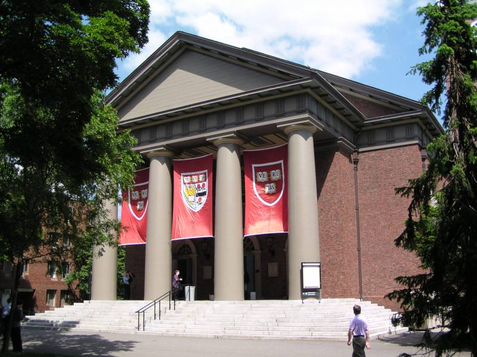
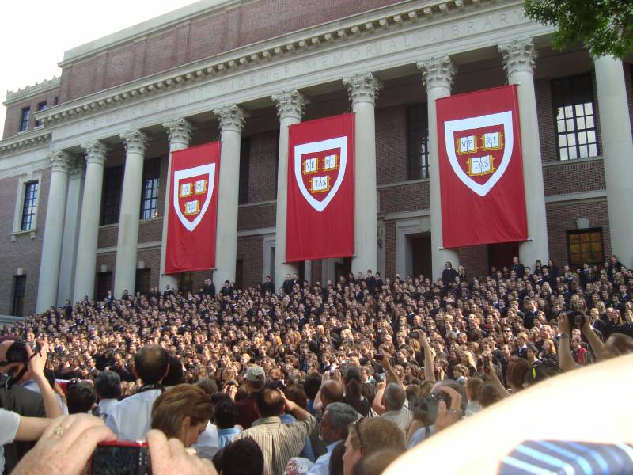
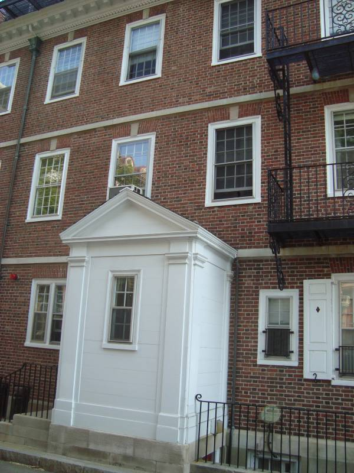
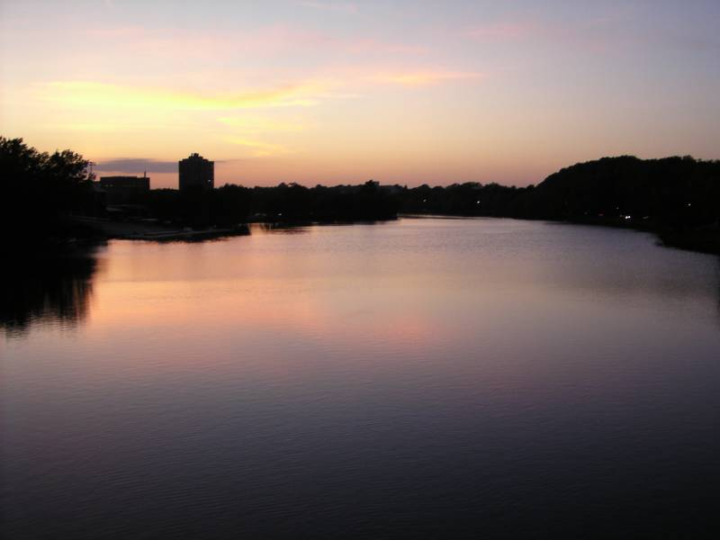

A už je to tady…první společensky náročný den :-) ! Promoce začínají oficiálně až ve dvě odpoledne průvodem absolventů, takže ráno máme ještě relativně volné. Během snídaně se konečně seznámíme s našimi spolubydlícími. Všechno jsou to sympatičtí mladí doktorandi z univerzity. Jméno toho prvního nějak přeslechnu :D, nicméně ochotně nám nabízí, ať si bereme jídlo z ledničky (kterou nejspíš nikdy nikdo neumýval, ehm :D…) a během snídaně se mě zvědavě vyptává na moje studia a rodnou vlast :D. Druhý se jmenuje Sean a na privátě se moc nepotkáváme. Vypadá jako hodně sportovní typ :D. Třetí je blonďatý Adam, který nám u snídaně prozradí, že jeho předci se do Států přistěhovali ze Slovenska :-). Zajímá se, jestli už jsme navštívili Boston a když zjistí, že tam máme namířeno až v pátek, donese nám k zapůjčení mapu města a průvodce s nejzajímavějšími památkami.
Po snídani se vydáme procourat Cambridge a nakoupit pár pohlednic a samozřejmě pro ledové kafe do Starbucks…už se mi začíná trochu zajídat, ale stejně si zas dám :D, sluníčko dneska totiž opravdu připaluje. Konečně si připadám celkem odpočatá. Navíc jsem ráda, že nám kluci u snídaně prozradili heslo na wifinu a podařilo se mi připojit na net a dát vědět světu, že žiju :-)…a v ISu mi zasvítil zápočet ze správy, v což jsem věru nedoufala :-) !!! Ve stínu u sochy Harvarda si dáme sraz s Lukem, naplánujeme odpolední program a vydáme se domů na chvíli si odpočinout a psychicky se připravit na zahájení promocí. Cestou domů potkáme na Broadwayi našeho spolubydlu (zrovna toho, jehož jméno neznám :D…) venčícího nádhernou chlupatou kolii :o). Poté, co se s ní pomazlím, pochopím z jeho žvatlání, že nás chtějí spolubydlové ještě předtím, než odjedeme, pozvat někam do města na večeři. Naši se trochu zděsí, protože jejich angličtina je dost bad :D, nicméně já se těším, že se o klucích dozvíme zase něco víc.
Ve dvě hodiny už stepujeme na hlavním yardu v kampusu, kde se začínají srocovat davy studentíků v hábitech, připadám si jak v Bradavicích :D. Vyfotíme si bráchu v taláru a to už se začíná studentský průvod rozcházet. U Harvardovy sochy (ano, navzdory všemu je to prostě perfektní místo k focení :D…) pózují skupinky absolventů, tak tam Luka, Melissu,Maríu a Daniela, kteří kráčí v průvodu pohromadě, taky vyblejskneme a jdeme si vybrat nějaké stinné místo u kostela. Studenty naženou do chrámu a začne mše, během které sluníčko pěkně připaluje, takže jsem během chvilky spálená :(…než se vrátím domů, tak z toho snad bude hezké opálení:D…Studentská mše je dlouhá, tak s tatím chvíli couráme po areálu a fotíme.

Kostel v campusu
Po obřadu následuje veliké skupinové focení na schodech Widenerovy knihovny. Absolventů je tolik, že nemáme šanci bráchu v tom davu najít, takže mu musíme zavolat, abysme věděli, do kterých míst směřovat objektiv.

Focení před Widenerovou knihovnou
Po hromadném focení si mají drazí rodičové konečně s kým pokecat - brácha nám totiž představí svého kamaráda Jána ze Slovenska, s kterým studoval už na AC a který promoval minulý rok. Teď už tady v Cambridge pracuje pro MIT. Já jsem koneckonců potěšena neméně, protože kafe s takovým fešákem (nojo, ty vlasy :D…) mi určitě budou holky doma závidět :D ! Do večerní párty máme ještě dvě hodinky času, a tak si jdeme sednout na zahrádku do jedné nedaleké kavárny. Většinu času se bavíme o škole, protože Jána hodně zajímá náš systém vysokého školství, tak líčím veselé historky z právnické fakulty i naši čerstvou aférku o plagiátorství. Taťka vzpomíná na mladá léta na výšce :D a odpoledne plyne tak příjemně, že než se nadějeme, už je čas vyrazit za řeku, kde se na stadionu koná párty :D. Jánovi se v naší společnosti evidentně zalíbí a zatouží vydat se na párty s námi , takže brácha zapojí konexe a shání mu po kamarádech volný lístek. Záhy se zadaří a tak se vydáváme přes Charles river konečně se pořádně nadlábnout. Cestou mi Ján ukazuje dům, ve kterém byl údajně vymyšlen Fejsbuk. Tuto památnou budovu samozřejmě hnedka fotím Péťovi :-).

Rodiště fejsbuku :D…
Na stadioně už to žije a rautové stoly se prohýbají jídlem. Nemám moc hlad, tak si nakládám od všeho jen trochu - jak se záhy ukáže, chutná to všecko vesměs stejně :D…Na party nás brašule seznámí konečně i se svým druhým spolubydlícím - Thomasem z Estonska a také s absolventem z naší vlasti - pražákem Šimonem a jeho rodiči, s kterými strávíme zbytek večera. Šimonova maminka, paní Mahlerová, se zajímá, jak to vypadá na Lukově koleji, a očividně je unešena z krbu, který mají na pokoji. Brašule však záhy odhalí, jaká další tajemství jejich krb skrývá…:D. Bydlí totiž v posledním patře a nahoře na komíně hnízdí ptáci…"…a když někdy trochu víc zafouká, tak propadnou komínem dolů a vy se pak v noci nestačíte divit, že vám lítá pták po pokoji…" :D:D:D Jo a krom ptáků v krbu :D mě toho večera ještě zaujalo, že Šimonův dědeček byl v “Uvolněte se, prosím”. Jestli ten díl najdu, tak sem hodím alespoň odkaz… (EDIT. Na díl s Šimonovým dědečkem se můžete podívat zde :) http://www.ceskatelevize.cz/ivysilani/208522161800003-uvolnete-se-prosim/ ) Zabalíme to někdy mezi osmou a devátou večer a jdeme se ještě projít k řece a nafotit si romantické zapadající slunce.

Podvečer u Charles River
U lékárny se rozloučíme s Jánem, na kterého něco leze a jde se nadopovat, aby byl fit na další dva dny promocí, a vyrazíme taky rovnou do hajan…a věřte nebo ne, dneska uléhám na svou pofidérní matraci docela s láskou. Jsem tak znavená, že jsem vlastně zatraceně ráda, že ji mám, holku moji nepohodlnou :D…
Komentáře (2)
Komentáře jsou uzavřené.